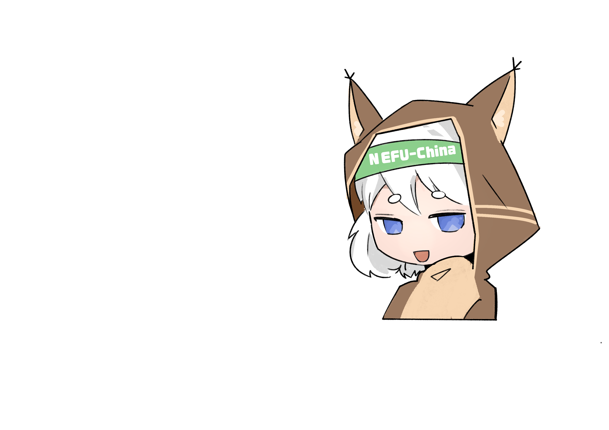
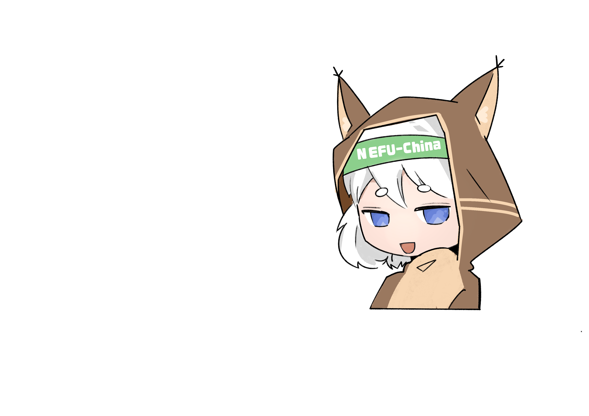
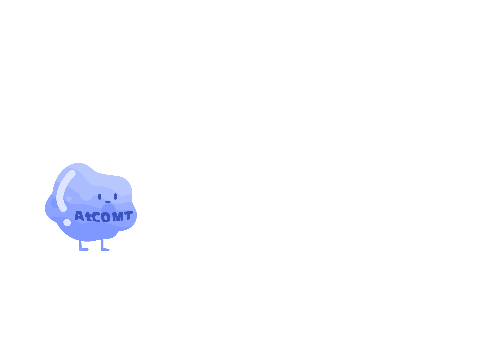
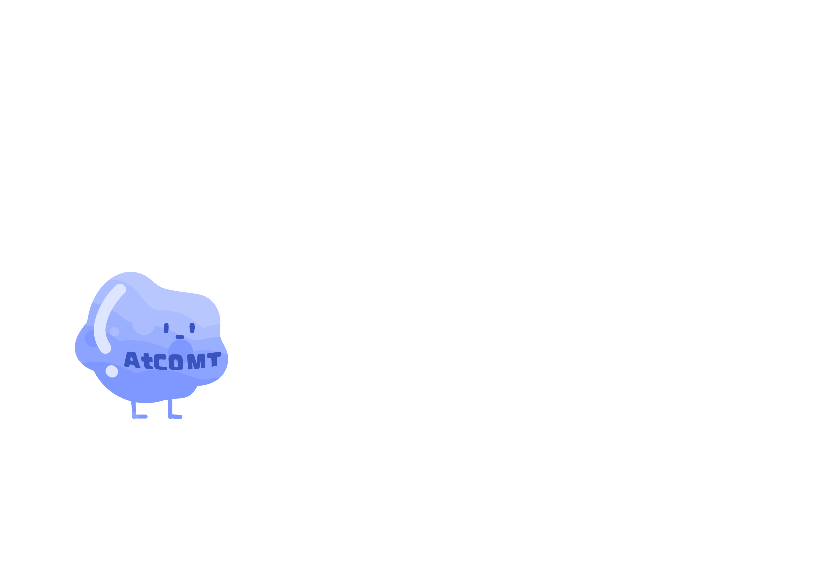

I am Escherichia coli. There are multiple pathways within my body to synthesize tryptophan, but I want to create more value. I've heard that tryptophan can be further synthesized into melatonin,I must strive to produce melatonin!
I am melatonin. I can regulate circadian rhythms and sleep cycles, but now it is too difficult to produce me. At the same time, I am constrained by environmental, safety, and cost issues. I hope Escherichia coli. can achieve its goal!
 


First, I must increase the synthesis of tryptophan.
We're here to help!We will perform pathway optimization on your process of producing tryptophan from glucose.


First, I must increase the synthesis of tryptophan.


My binding ability is too poor, the binding with the substrate is very unstable, I cannot help you convert NAS to MT. What should I do?

We will help you build a biosensor and perform directed evolution on you to make your binding ability stronger.
We will help you build a biosensor and perform directed evolution on you to make your binding ability stronger.


 
